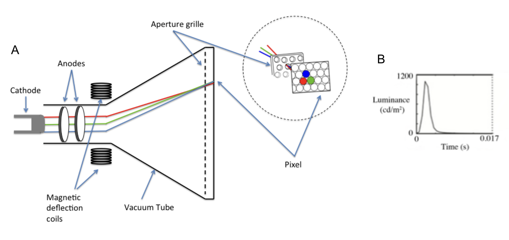
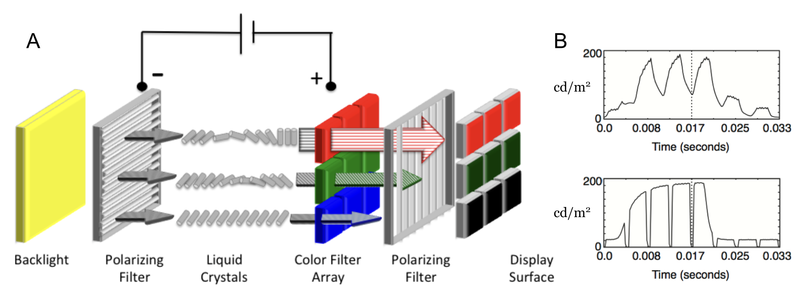
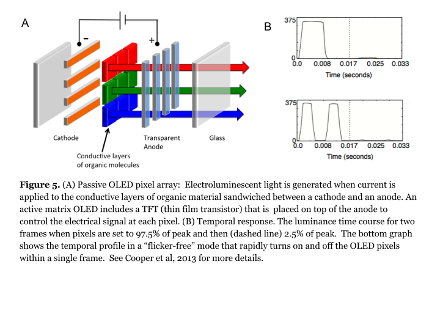

31 Display technologies
Suggestions of all kinds for this book draft are welcome — whether it’s fixing small errors, raising bigger questions, or offering new perspectives. Please share comments through GitHub Issues. To make feedback easier to address, please point to the section you have in mind — by section number or a short snippet of text.
31.1 Display technologies overview
Display architectures are distinguished by (a) the physical process that produces the light, and (b) the spatial arrangement of the pixels and subpixels. Key design parameters of commercial displays are energy efficiency, brightness, spatial resolution, darkness, color range, temporal refresh and update rates. The relative importance of these parameters depends on the application.
The three main planar display technologies used in vision experiments today are CRTs (cathode ray tubes), LCDs (liquid-crystal displays) and OLEDs (organic light emitting diodes). Color CRTs were developed by RCA in the 1950s (Law, 1976) and were the nearly universal display technology for several decades. They remain an important display technology for vision researchers, although now they are rarely sold as consumer products. Invented at RCA labs in the 1970s (Kawamoto, 2002), LCDs were introduced as small mobile displays in digital watches, calculators and other handheld devices; later they enabled the widespread adoption of laptop computers. OLEDs were invented at Kodak in the 1980s (Tang and Van Slyke, 1987) and were first introduced as displays for digital cameras. Large OLED displays are expensive, but they have some advantages over LCDs: they achieve a deeper black and they have better temporal resolution.
Since CRTs are no longer mass produced, researchers are increasingly using LCD and OLED monitors for stimulus creation. Several companies have developed software to control LCD monitors specifically for vision research (e.g., ViewPixx and Display++). OLED displays have higher contrast and refresh rates than LCDs, making them particularly well-suited for experiments requiring highly accurate and temporally precise visual stimuli. Even so, CRTs continue to be used in multiple scientific labs. One reason CRTs are preferred is that the intensity of each primary can be accurately controlled beyond 10 bits (Brainard et al, 2002). As shown by simulation in Chapter 32, this intensity precision is valuable for visual psychophysical experiments that measure detection or discrimination thresholds.
In addition to planar displays, we also examine digital light projectors (DLPs), emerging MicroLED architectures, and near-eye displays used in virtual and augmented reality (AR/VR).
31.2 Planar and projection display technologies
31.2.1 Cathode Ray Tubes (CRT)
CRTs create light by directing an electron beam onto one of three different types of phosphors (Castellano, 1992). When irradiated by electrons, each of the three phosphors emits light with a spectral radiance distribution that is unique to that phosphor. CRT phosphors are painted on a transparent glass surface in a pattern of alternating dots or stripes, and they are selected to emit predominantly in the long (red), middle (green) and short (blue) wavebands (Figure 30.1 and Figure 30.2). The amount of light from each type of phosphor is controlled by the intensity of the electron beam that is incident on the phosphor. The spatial properties of the display are determined by the size and spacing of the phosphor dots or stripes.
The temporal properties of the display are determined by the frequency with which each phosphor is stimulated by electrons and the rate at which the phosphorescence decays (see Figure 31.1). The refresh rate is determined by how fast an electron beam can scan across the many rows of pixels in a display. The more rows there are, the more time it takes for the electron beam to return to the same phosphor dot. When the refresh rate is slow and the phosphor decay is fast, the display appears to flicker. Longer phosphor decay times reduce the visibility of flicker, but increase the visibility of motion blur (Farrell, 1986; Zhang et al, 2007).

In addition to scanning through many rows of pixels, the electron beam intensity modulates as the beam traverses phosphors within each row. The electron beam modulation rate, referred to as slew rate, is not fast enough to change perfectly as the beam moves between adjacent pixels. Consequently, the ability to control the light from adjacent pixels within a row is not perfectly independent (Lyons and Farrell, 1989; see Section 32.2.1).
31.2.2 Liquid Crystal Displays
LCD displays are a large array of light valves that control the amount of light that passes from a backlight, that is constantly on, to the viewer (Figure 31.2; Silverstein and Wandell Handbook Chapter). The backlight is usually a fluorescent tube or sometimes a row of LEDs positioned at the edge of the LC array (edge-lit), or finally a matrix of LEDs covering most of the back of the LCD panel (direct-lit). The photons from the backlight are spread uniformly across the back of the display using diffusing filters. The backlight passes through a polarization filter, a layer of liquid crystal material, a second polarization filter, and then a color filter. The ability of photons to traverse this path is controlled by the alignment of the liquid crystals which determines the polarization of the photons and thus how much light passes between the two polarization filters. The state of the liquid crystal is determined by an electric field that is controlled by digital values in a frame-buffer, under software control. Even when the liquid crystal is in a state that permits transmission (open), only a small fraction (about 3 percent) of the backlight photons pass through the two polarizers, color filter, and electronics.
The spectral radiance of an LCD pixel is determined by the SPD of the backlight and the transmissivity of the optical elements (polarizers, LC, and color filters). The spatial properties of an LCD are determined by the dimensions of a panel of thin film transistors (TFT) that controls the voltage for each pixel component and the size and arrangement of each individual filter in the color filter array. The temporal properties of an LCD are determined by the modulation rate of the backlight and the temporal response of the liquid crystal (Yang and Wu 2006). LCDs use sample and hold circuitry that keep the liquid crystals in their “open” or “closed” state (see Figure 31.2). This means that flicker is not visible, but a negative consequence of the slow dynamics is that LCDs can produce visible motion blur. Furthermore, liquid crystals respond faster to an increase in voltage (changing the alignment of the liquid crystals) than they do to a decrease in voltage (returning towards its natural state). Consequently, a change from white to black is faster than a change from black to white. Some LCD manufacturers have introduced circuitry to “overdrive” and “undershoot” the voltage delivered to each pixel. This additional circuitry reduces the visible motion blur, but it makes it impossible to separately control the spatial and temporal properties of the display. The slow and asymmetric changes in the state of liquid crystals also makes it difficult to have precise control in the timing of visual stimuli (Elze and Tanner, 2012).

Another limitation of LCDs is that in the “off” state, photons from the backlight find their way through the filters to the viewer. Consequently, LCDs do not achieve a complete black background. Manufacturers introduced LED backlit panels that can be locally dimmed in different regions. In this way, one portion of the image can be much brighter than another, and a portion of the display can be nearly black. This design extends the image dynamic range. Such LCD displays are difficult to use in calibrated experiments because of the proprietary software and control circuitry that can vary with the displayed image.
31.2.3 Organic Light Emitting Diodes (OLED)
OLEDs are a much simpler display technology. Rather than being a light valve, each pixel in an OLED display is a light source. Each OLED pixel consists of two layers of organic molecules that are sandwiched between a cathode and an anode (Figure 31.3). OLED pixels emit light when an electric current is applied to the electroluminescent layer of organic molecules. There are several ways to produce the different primaries: (1) Each diode can be made from a different substance that emits light in a distinct wavelength band, (2) color filters can be placed in front of a single type of diode, or (3) the emissions from a single type of OLED can be used to excite different types of phosphors (Tsujimura, 2012). OLEDs do not require a backlight. Because each pixel can be black, emitting only light that is scattered from nearby pixels, these displays can achieve a very high dynamic range.
The spatial properties of an OLED display are determined by the arrangement of OLEDs that are deposited onto glass. Some types of OLEDs (polymer OLEDs or PLEDs) can be printed onto plastic using a modified inkjet printer (Carter et al, 2006), or a 3D printer with a spray nozzle (Su et al 2022).

The temporal properties of an OLED display are determined by the rate at which the pixel intensities can be changed (update rate) and the rate at which the screen is refreshed (refresh rate). OLEDs can be turned on and off extremely rapidly (update rate). Hence, the refresh rate limits the motion velocities that can be represented (Watson et al, 1986). To reduce the visibility of flicker and motion blur, OLEDs can be refreshed at a rate that exceeds the update rate (see Figure 31.3).
31.2.4 Digital light projectors (DLP)
The digital light projector (DLP) display technology is a micro-electro-mechanical system (MEMS) consisting of an array of microscopically small mirrors arranged in a matrix on a semiconductor chip—one mirror for each pixel (Younse, 1993; Florence and Yoder, 1996). Each mirror is on the order of 15 microns in size, and the deformable mirror arrays can have many different formats (e.g., 4K, 1080p, etc.). The system includes a constant backlight, and each mirror can be in one of two states: it either reflects the backlight photons towards or away from the viewer.
The mirrors can alternate states very rapidly (kilohertz), and the light intensity at each pixel is controlled by varying the percentage of time the mirror is directing light towards the viewer. In the single-chip DLP, color is controlled using a rapidly spinning color wheel that interposes different color filters between the light source. The single-chip DLP design uses a color wheel whose rotation is synchronized with the control signals sent to the chip. While most display technologies use subpixel primaries that are adjacent in space, the DLP color primaries are adjacent in time—a technique called field-sequential color. Some DLP devices include only three (red, green and blue) primaries, while others include a fourth (white or clear) primary. The white primary increases the maximum display brightness, but at the highest brightness levels the display has a vanishingly small color gamut (Kelley et al, 2009).
A problem with the single-chip DLP design is that field-sequential color can produce visible color artifacts when the eye moves rapidly across the image. High speed eye movements cause the sequential red, green and blue images to project to different retinal positions (Zhang and Farrell, 2003). A more expensive three-chip DLP design is often used in home and movie theatres. The three-chip design simultaneously projects red, green and blue images that are co-registered; hence, these DLPs do not produce the sequential color artifacts.
While DLP displays are not used widely in visual psychophysics, they have been adapted for use in studies of color constancy (Brainard et al 1997), in vitro primate retina intracellular recordings (Packer et al, 2001), and functional magnetic resonance imaging (Engel et al, 1997).
31.2.5 MicroLEDs
MicroLED displays are a new generation of screen technology. The key difference from OLED displays is that MicroLEDs use inorganic materials like gallium nitride (GaN) rather than organic compounds. When current flows through these tiny LEDs, electrons combine with “holes” (areas lacking electrons) to produce light. The intensity of this light depends on how much current is delivered; this relationship isn’t linear. The current delivered to each pixel in a MicroLED display is controlled by a thin-film transistor (TFT) in the display’s backplane. MicroLEDs produce color primaries using the same methods as OLEDs—direct emission, color filters, or color conversion using quantum dots.
MicroLEDs offer several significant advantages compared to current OLED technology. Their lifespan is remarkably long, about \(10^6\) hours compared to OLEDs’ \(3 \times 10^4\) hours. They’re also approximately 1,000 times brighter and respond faster to electrical signals. Perhaps most impressively, MicroLEDs can be made very small, around 1 micrometer (Hsiang et al., 2021; Smith et al., 2020).
MicroLED technology is just appearing in consumer products, including near-eye displays (Bandari & Schmidt, 2024; Huang et al., 2020). Manufacturers have also successfully created large displays using this technology (MiniMicroLED, 2024). Companies are currently developing MicroLED displays for smartphones and virtual reality headsets. The main challenge now is reducing production costs to make these displays affordable.
31.3 Light-field and near-eye (AR/VR) displays
In considering the evolution of display imaging systems, it is helpful to return to the concept of the environmental light field—a complete radiometric description of light rays within a three-dimensional scene (Section 2.4). Recreating this full light field is a significant challenge, currently beyond our technological capabilities. An ideal system would emit light rays with precise intensity, direction, and wavelength from every point within a large volume, effectively replicating how light propagates from a real 3D scene. This approach promises accurate depth cues—including focus, parallax, and occlusion—allowing viewers to perceive lifelike 3D images without special glasses or head tracking, a key objective for many display technology researchers and engineers.
31.3.1 Far-field light-field displays
Free-standing displays approximate portions of the environmental light field. Early systems, primarily for teleconferencing, were expensive and complex. Commercial examples included life-size displays with ultra-high definition (e.g., Cisco TelePresence, Poly RealPresence, Google’s Project Starline), designed to present remote participants at their actual size. Some used curved or wrap-around displays for greater immersion, attempting a better approximation of the light field. More recent displays offer a closer approximation of the light field (Wang et al., 2024) within a volume of space (e.g., Holografika, Light Field Lab, Leia). These systems integrate optics with light generation to control the intensity, color, and direction of emitted rays. The light field itself can be generated using computer graphics or captured with a light field camera (e.g., Raytrix). These are often referred to as “far-field” displays.
31.3.2 Near-field AR/VR headsets
An alternative approach uses simpler displays but dynamically updates the image based on the viewer’s head and eye position. The development of small displays like OLEDs and microLEDs has enabled compact, wearable “near-field” displays in the form of glasses or goggles. These systems use information about both the environmental light field and the viewer’s head and eye position. A computer then calculates and renders the appropriate display image. This approach was pioneered in virtual reality (VR) devices and is now being developed for augmented reality (AR) and mixed reality (MR) (e.g., Apple’s Vision Pro, Meta’s Quest Pro). The near-field devices involve integration between many different sensors and extensive computation, along with highly specialized optics (Y. Ding et al., 2023; Rolland & Goodsell, 2024) to enable viewing the image on the small, near display. For example, the Apple Vision Pro includes twenty different sensors, a micro-OLED display with 23 million pixels and custom optics, and an M2 processor1.
Future display development will likely explore both far-field devices, aiming to present a larger portion of the environmental light field, and near-field devices, focusing on dynamically updating the incident light field. However, the near-field devices must address two key human factors challenges: the vergence-accommodation conflict (VAC) and latency (Bhowmik, 2024; Jerald, 2015; Kramida, 2016).
- Timing/Latency (Motion-to-Photon Latency) \(\rightarrow\) Nausea & Dizziness (Cybersickness)
- Optics (Vergence-Accommodation Conflict) \(\rightarrow\) Eye Strain & Headaches (Visual Fatigue)
31.3.3 Timing mismatch and passthrough latency
The rise of Passthrough Mixed Reality (like the Apple Vision Pro or Meta Quest 3) made the timing mismatch more salient to people. While standard VR latency is mostly “solved” for high-end hardware, where we can monitor the head and eye position and update within 20 ms, seeing the real world with a delay (passthrough latency) is a new, highly sensitive frontier that has reignited the latency conversation. In this mixed reality mode the actual image has graphics superimposed. Computing the graphical display can take time, and thus delay the image compared to the head movement. This causes significant discomfort.
- Symptoms: Nausea, dizziness, vertigo, cold sweating, “stomach awareness.”
- The Mechanism: This is a Visual-Vestibular Conflict. Your eyes see the world move (or lag behind your head movement), but your inner ear (vestibular system) says you moved instantly. The brain interprets this sensory mismatch as a hallucination or poisoning, triggering a nausea response to “expel the toxin.”
- Current Status:
- In Standard VR: Hardware latency is largely considered a “solved” engineering problem in high-end headsets. If the “motion-to-photon” latency is kept below 20 ms (the industry gold standard), most users do not feel sick from latency alone.
- In Mixed Reality (Passthrough): This is where the problem has resurfaced. Even a 12 ms delay in seeing your own hands or the real room moving can feel “wrong” and cause significant discomfort.
31.3.4 Vergence-Accommodation conflict (VAC)
The VAC arises from a mismatch between vergence and accommodation, two normally coupled eye responses (Chapter 25). In natural vision, our eyes converge (or diverge) to fixate on an object, and simultaneously adjust focus (accommodate) to maintain a sharp image. In most stereoscopic displays, however, the eyes are always focused on the fixed display plane, regardless of the virtual object’s apparent distance. This creates a conflict: while the eyes verge to align with virtual objects at varying depths, accommodation remains fixed at the screen distance.
- Symptoms: Eye strain, blurred vision, difficulty focusing after removing the headset, headaches, “heavy eyes.”
- The Mechanism:
- Vergence: Your eyes rotate inward (cross) to look at a nearby virtual object.
- Accommodation: Your eye lenses change shape to focus light.
- In the real world, these two actions are coupled (you cross your eyes and focus close). In a headset, you must cross your eyes to see the 3D depth, but your lenses must stay focused at a fixed distance (usually ~1.5 to 2 meters) where the screen is optically projected. You are effectively “uncoupling” a reflex you’ve used since birth.
- Current Status: This is widely viewed as the primary limiter of session duration. It is why users often feel “drained” after 45–60 minutes, even if they don’t feel nauseous. It is currently unsolved in most consumer hardware (which use fixed-focus lenses), though research into “varifocal” displays is ongoing.
31.3.5 Summary of relative significance
| Feature | Primary Discomfort | “Consensus” Weight |
|---|---|---|
| Latency | Nausea (sickness) | The Gatekeeper. If latency is bad, the device is unusable. It is the acute “show-stopper.” |
| VAC | Eye Strain (fatigue) | The Endurance Limiter. It limits how long you can use the device comfortably, but rarely stops you immediately. |
The Verdict: If people are complaining about feeling sick or dizzy, the consensus points to timing/latency (or poor locomotion design). If they complain about headaches or blurry vision after a session, the consensus points to VAC.